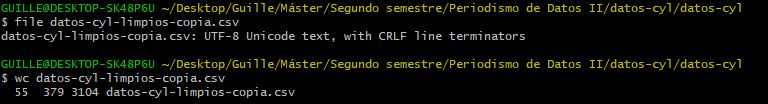

Guillermo Gallegos Gómez
Periodismo de Datos II
Para esta ocasión he escogido las visualizaciones que se incluyen en un reportaje de Maldita.es del pasado 14 de julio de 2020 en el que habla del registro del Falcon, el avión presidencial, (consulta el reportaje completo en su web) por parte de cada uno de los presidentes de España.
La primera visualización que quiero destacar es un line chart race que aprovechan para mostrar la evolución de los viajes de los presidentes (desde Felipe González hasta Pedro Sánchez) en sus primeros 500 días al frente del país.
Lo que destaco en este primer ejemplo es el impacto visual del propio gráfico, como su interactividad, dado que si pasas el ratón por encima de cada una de las líneas se destaca del resto.

La segunda visualización es algo parecida a la anterior. En este caso es un bar chat race en el que se refleja los viajes mensuales que ha realizado cada presidente de media. Lo llamativo de este ejemplo es la originalidad de añadir un avión al principio de la barra, lo que le aporta una mayor representatividad y hace un mayor efecto de “carrera”.
En este caso, echo en falta algo de interactividad como en la anterior, dado que si pasas el ratón por encima no cambia nada en la gráfica.
La tercera y última visualización escogida de este reportaje creo que es la que puede ser más compleja de leer a simple vista, pero la que una mayor información puede aportar.
En este caso se trata de un diagrama de Sankey, que se ha utilizado para mostrar los motivos de los viajes de los distintos presidentes. Se detalla entre viajes nacionales, internacionales, cumbres y consejos europeos.
Además de la cantidad de información que aporta, hay que señalar su carácter interactivo dado que, al igual que en el primer ejemplo, se destaca la información al pasar el ratón por encima de cada uno de los elementos.
En general, el reportaje incluye gráficos muy visuales y, sobre todo, interactivas y fáciles de entender. Aportan información a través de un vistazo y facilitan la comprensión del mensaje que buscan transmitir.
Además, el reportaje incluye otro tipo de elementos de visualización para dinamizar la información de una mayor manera. junto a los comentados, se encuentran una infografía con las ciudades más visitadas por los presidentes del Gobierno en sus viajes con el Falcon y un mapa del mundo con los viajes de los presidentes del Gobierno con avión oficial.
Todos los elementos se han creado a través de la plataforma Flourish, la cual conozco, y creo que es un acierto por la variedad que permite y que se incluye en el reportaje.
Las siguientes visualizaciones se van a comentar de un modo general, dado que la construcción de todas ellas es lo que genera un buen impacto en el reportaje. En concreto, este es de la expansión del coronavirus en lugares cerradas como bares, salones o clases. El artículo lo publicó El País el 25 de octubre de 2020 (consulta el reportaje completo en su web).

El reportaje muestra cómo se puede transmitir el covid en espacios cerrados con el paso del tiempo si no se llevan a cabo las medidas sanitarias adecuadas. Todo ello se explica según realizas scroll a lo largo del texto y las imágenes van cambiando.
Muestra las situaciones posibles en un salón, un bar y un colegio y cómo se esparciría el virus a través del aire mediante los aerosoles.
Lo que más llama la atención de este ejemplo es la visualización, es decir, no son unas gráficas habituales que se suceden a lo largo del texto, sino que se muestran en función del movimiento del usuario. Esto es claramente un nivel muy alto de interactividad, dado que cada acción del lector condiciona lo que ve o deja de ver

La primera y la tercera visualización del reportaje se han creado con Flourish y se han embebido a la web. Esto se ve fácilmente, dado que debajo de todas y cada una de ellas sale la marca de la plataforma.
Respecto a los colores, la primera visualización llama la atención por la elección para cada uno de los presidentes. No se ha procedido a una personalización de cada uno de ellos, o al menos no lo parece, ya que José Luís Rodríguez Zapatero aparece de verde, Pedro Sánchez de azul, Mariano Rajoy de morado, José María Aznar de amarillo y Felipe González de otra tonalidad de azul.
La segunda visualización destaca en los colores también, dado que, como se puede apreciar, los colores que aparecen son dos (rojo y azul), intercalados. En esta ocasión debería haberse mantenido los colores de la primera visualización. Además, en este segundo ejemplo se trata de un gif, no un elemento creado con Flourish.
La tercera visualización sí se ha elaborado con esta aplicación y tampoco mantiene un sentido u orden en cuanto a los colores, se mezclan de nuevo, pero sin repetirse respecto al primer ejemplo.
La tipografía de las visualizaciones es la predefinida de la aplicación Flourish, y el tamaño de letra está definido en un 87,5%, con el objetivo de hacerla responsive.
Además, cabe destacar el equilibrio que existe entre la narrativa visual y la narrativa textual, dado que está perfectamente introducidos en el texto, sin llegar a repetir literalmente lo que se muestra en el cuerpo y en la representación
La reproductibilidad de la visualización queda en manos del usuario, quien al hacer clicar inicia reinicia las visualizaciones y al pasar el ratón por encima se destaca la información.
El segundo de los casos también es llamativo, dado que se trata de elementos visuales, pero que no se pueden analizar a partir del inspector de la web. Según se menciona al final del reportaje, los vídeos los ha elaborado Luís Almodóvar, pero no queda claro que sean vídeos, dado que al hacer scroll varían las visualizaciones.
Respecto a los colores, están correctamente seleccionados, sin excederse en la variedad cromática, ni abusar de ellos. Se mezclan los colores grises de las estancias representadas, con los azules del aire, los verdes de las personas sanas y los rojos de los contagiados de coronavirus.
En este segundo ejemplo, el equilibrio entre las narrativas visuales y textuales es mayor. Ambas tienen un gran protagonismo y se llega incluso a ceder espacios de mayor importancia a las visualizaciones, sin texto por encima.
La validación del HTML en este caso es complicada, debido a que no se puede comprobar. A diferencia del ejemplo anterior, no está incrustado ni embebido, sino que debe ser un vídeo o una visualización diferente creada por el autor.
La reproductibilidad de la visualización queda en manos del usuario, ya que al hacer scroll varía.
Los datos que se han utilizado para esta actividad dirigida se han obtenido de la página web del Instituto Nacional de Estadística (INE). La visualización que se ha llevado a cabo versa sobre la evolución de la población en las nueve provincias de Castilla y León desde 1980 hasta 2020. Debido al formato de la web del propio INE, los datos se han descargado directamente de la web.
Después, a través de cygwin se ha limpiado el archivo de datos que no se consideran necesarios. Todo ello se ha realizado a través del editor nano.
Y el archivo final se ha guardado con otro nombre, para poder realizar diferentes comprobaciones de ambos archivos. El original se llama datos-cyl-limpios-copia.csv y el final datos-cyl-limpios.csv.
Una vez limpiados los datos a través del editor nano, se ha comprobado las características de ambos archivos, así como las palabras con las que cuentan cada uno de ellos.
Por último, la comprobación final ha servido para analizar la cabecera y el pie de ambos archivos, para así comprobar las variaciones realizadas tras la limpieza.
El proceso ha terminado con la elaboración de varios gráficos con Datawrapper en los que se muestran todas las evoluciones de una manera comprensible y fácil de leer.
{kind=link}